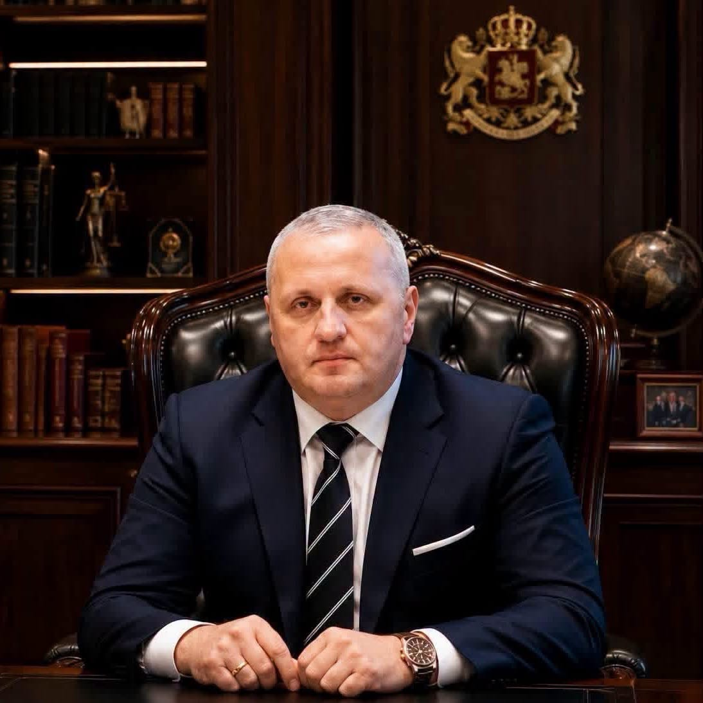
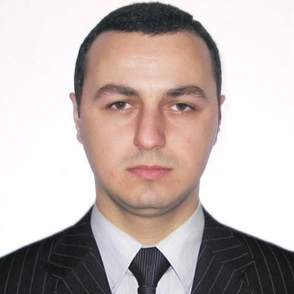

ეროვნული პროფესიული და სამეცნიერო პლატფორმა
საქართველოს სისხლის სამართლის ეროვნული ცენტრი
Professor Tinatin Tsereteli Georgian National Criminal Law Center
ცენტრი აერთიანებს სისხლის სამართლისა და სისხლის სამართლის პროცესის სფეროში მოღვაწე იურისტებს, ადვოკატებს, მეცნიერებსა და პრაქტიკოსებს. ჩვენი საქმიანობის ცენტრში დგას ადამიანი, მისი ღირსება, თავისუფლება და კანონით დაცული უფლებები.
ჩვენი დევიზი
კანონის უზენაესობა.
ადამიანის ღირსება.
სამართლიანი მართლმსაჯულება.
ეროვნული ცენტრი
01
ადამიანი
ღირსება და თავისუფლება
სამართალი
კანონის უზენაესობა
დაცვა
პროფესიული და დამოუკიდებელი
ცენტრის შესახებ
სამართლისა და სამართლიანობის დაცვის ეროვნული პროფესიული პლატფორმა
თინათინ წერეთლის სახელობის საქართველოს სისხლის სამართლის ეროვნული ცენტრი არის პროფესიული და სამეცნიერო სივრცე, რომელიც ემსახურება სამართლებრივი ცოდნის, პრაქტიკისა და მაღალი პროფესიული სტანდარტების განვითარებას.
ცენტრის საქმიანობის უმთავრესი მიზანია კანონის უზენაესობის, სამართლიანი მართლმსაჯულების, ადამიანის უფლებებისა და თავისუფლებების დაცვისა და სისხლის სამართლის სფეროში პროფესიული სტანდარტების განვითარების ხელშეწყობა.
ცენტრი ხელს უწყობს სისხლის სამართლის პოლიტიკისა და მართლმსაჯულების პრაქტიკის განვითარებას, სამართლებრივი პრობლემების მეცნიერულ შესწავლას, სამართლებრივი პრაქტიკის ანალიზს, პროფესიული ცოდნისა და გამოცდილების გაზიარებას და თანამედროვე საერთაშორისო სტანდარტების დამკვიდრებას.
ჩვენთვის სამართალი მხოლოდ ნორმათა ერთობლიობა არ არის. სამართალი არის ადამიანის ღირსების, თავისუფლებისა და სამართლიანობის დაცვის უმნიშვნელოვანესი მექანიზმი.
ფუნდამენტური პრინციპები
ცენტრი განსაკუთრებულ მნიშვნელობას ანიჭებს ადვოკატურის დამოუკიდებლობას და დაცვის უფლების რეალურ და ეფექტიან განხორციელებას. თითოეული ადამიანის უფლების დაცვა არის როგორც კონკრეტული საქმის, ისე მართლმსაჯულების ხარისხისა და სამართლებრივი სახელმწიფოს სიმტკიცის საკითხი.
სიამაყით ვატარებთ მის სახელს
სიამაყით ვატარებთ მის სახელს
ვინ იყო თინათინ წერეთელი?
თინათინ წერეთელი
იურისტი, მეცნიერი, პედაგოგი, იურიდიულ მეცნიერებათა დოქტორი, პროფესორი, სისხლის სამართლის ქართული სკოლის ფუძემდებელი
დაიბადა თბილისში. 1926 წელს დაამთავრა თბილისის სახელმწიფო უნივერსიტეტის სოციალურ-ეკონომიკური ფაკულტეტი.
სრული ბიოგრაფიის გახსნა +
მუშაობდა სხვადასხვა ორგანიზაციაში პრაქტიკოს იურისტად. 1934 წლიდან 1937 წლამდე მუშაობდა სსრ სახკომსაბჭოში იურისტ-კონსულტანტად.
1933 წლიდან ეწეოდა სამეცნიერო და პედაგოგიურ საქმიანობას თბილისის სახელმწიფო უნივერსიტეტში. კითხულობდა ლექციებს სამოქალაქო სამართალში. 1937 წლიდან 1944 წლამდე მიჰყავდა სპეციალური კურსი „მოძღვრება დანაშაულზე“.
1950 წლიდან 1952 წლამდე იყო იურიდიული ფაკულტეტის დეკანი. იყო საქართველოს მეცნიერებათა აკადემიის ეკონომიკისა და სამართლის ინსტიტუტის სამართლის სექტორის ორგანიზატორი და ხელმძღვანელი.
მონაწილეობდა საქართველოს სსრ სისხლის სამართლის კოდექსის მომზადებაში. იყო რუსულ-ქართული იურიდიული ტერმინოლოგიის თანაავტორი და მთავარი რედაქტორი 1963 წელს.
იკვლევდა სისხლის სამართლის ზოგად თეორიულ პრობლემებს, დანაშაულისა და პასუხისმგებლობის საკითხებს და სისხლის სამართლის საფუძვლებს. მონაწილეობდა არაერთ საერთაშორისო და საკავშირო კონგრესსა და სიმპოზიუმში.
1950 წელს მიენიჭა იურიდიულ მეცნიერებათა დოქტორის ხარისხი. 1951 წელს კი პროფესორის წოდება. იგი აღიარებულია სისხლის სამართლის ქართული სკოლის ფუძემდებლად.
ცენტრის მიმართულებები
პროფესიული და ინსტიტუციური განვითარების მიმართულებები
ცენტრის საქმიანობა აერთიანებს მართლმსაჯულების განვითარებას, პროფესიული ხარისხის სტანდარტებს და სამართლებრივ კვლევით პროექტებს.
01
სასამართლო რეფორმა
სამართლიანი, დამოუკიდებელი და ეფექტიანი მართლმსაჯულების ინსტიტუციური განვითარების ხელშეწყობა.
02
ხარისხის მართვა და სტანდარტები
პროფესიული საქმიანობის მაღალი სტანდარტების, ეთიკის, ცოდნისა და ხარისხის მართვის სისტემების განვითარება.
03
მიმდინარე პროექტები
სამართლებრივი კვლევების, პროფესიული ინიციატივებისა და საგანმანათლებლო პროექტების განხორციელება.
ჩვენი მისია
ძლიერი სამართლებრივი სახელმწიფოს განმტკიცება
ჩვენი მისიაა ძლიერი სამართლებრივი სახელმწიფოს განმტკიცება ძლიერი, დამოუკიდებელი და პროფესიონალური მართლმსაჯულების გზით.
ცენტრი აერთიანებს სამართლის მეცნიერებასა და პრაქტიკას და ხელს უწყობს სისხლის სამართლის პოლიტიკისა და მართლმსაჯულების განვითარებას, სამართლებრივი პრაქტიკის კვლევასა და ანალიზს, პროფესიული გამოცდილების გაზიარებას და საერთაშორისო სტანდარტების დანერგვას.
ჩვენი საქმიანობის ცენტრში დგას ადამიანი, მისი ღირსება, თავისუფლება და კანონით დაცული უფლებები.
ისეთი მართლმსაჯულების სისტემა, სადაც კანონი დაცულია
ჩვენი ხედვაა საქართველოში ისეთი სისხლის სამართლის მართლმსაჯულების სისტემის განვითარება, სადაც ადამიანის უფლებები გარანტირებულია, დაცვის უფლება რეალურია, ხოლო პროფესიონალიზმი და სამართლიანობა წარმოადგენს უმაღლეს ღირებულებებს.
კანონის უზენაესობა
კანონი არის უმაღლესი სამართლებრივი სტანდარტი, რომლის წინაშეც ყველა თანაბარია.
ადამიანის ღირსება და უფლებები
ნებისმიერი სამართლებრივი პროცესი უნდა ეფუძნებოდეს ადამიანის ღირსებისა და ფუნდამენტური უფლებების პატივისცემას.
დაცვის უფლება
ყველა პირს აქვს უფლება მიიღოს ეფექტიანი, დამოუკიდებელი და პროფესიული სამართლებრივი დაცვა.
კლიენტის ინტერესების პრიორიტეტი
ადვოკატის უმთავრესი პროფესიული პასუხისმგებლობაა კლიენტის კანონიერი ინტერესების კეთილსინდისიერი და პრინციპული დაცვა.
დამოუკიდებლობა და მიუკერძოებლობა
სამართლებრივი პროფესია არ უნდა ექვემდებარებოდეს პოლიტიკურ, ადმინისტრაციულ, ფინანსურ ან სხვა არაპროფესიულ გავლენას.
პროფესიონალიზმი
ჩვენ ვეყრდნობით სამართლებრივ ცოდნას, პრაქტიკულ გამოცდილებას, მტკიცებულებებს, პროფესიულ ეთიკასა და თანამედროვე სამართლებრივ სტანდარტებს.
სამართლიანი მართლმსაჯულება
სამართლიანი სასამართლო, მხარეთა თანასწორობა, შეჯიბრებითობა და უდანაშაულობის პრეზუმფცია დემოკრატიული მართლმსაჯულების საფუძველია.
ცენტრის ხელმძღვანელობა
ცენტრის ხელმძღვანელობა
ცენტრის ხელმძღვანელობა აერთიანებს ხანგრძლივ პრაქტიკულ, აკადემიურ და ინსტიტუციურ გამოცდილებას.

გენერალური დირექტორიპაატა შავაძე
გენერალური დირექტორი
დაიბადა 1971 წლის 21 აგვისტოს ქუთაისში, ექიმისა და საზოგადო მოღვაწის ალექსანდრე შავაძის ოჯახში. 2005 წლიდან არის ადვოკატი, საერთო სპეციალიზაციით და დამატებითი სპეციალიზაციით არასრულწლოვანთა მართლმსაჯულებაში.
სრული ბიოგრაფიის გახსნა +
განათლება და სამეცნიერო ხარისხი
1997 წელს, 25 წლის ასაკში, თბილისის სახელმწიფო უნივერსიტეტის იურიდიულ ფაკულტეტზე დაიცვა დისერტაცია თემაზე „საქართველოს ადმინისტრაციული სამართალდარღვევის კანონმდებლობის კოდიფიკაციის პრობლემები“. სამეცნიერო ხელმძღვანელი იყო პროფესორი ვალერიან ლორია.
ძირითადი პროფესიული სტატუსები
არის თინათინ წერეთლის სახელობის საქართველოს სისხლის სამართლის ეროვნული ცენტრის გენერალური დირექტორი, აკადემიკოს ივანე ჯავახიშვილის სახელობის ბათუმის იურიდიული აკადემიის გენერალური დირექტორი და „პაატა შავაძე და პარტნიორების“ გენერალური დირექტორი.
1996 წლიდან არის საქართველოს ეროვნული აკადემიის საპატიო აკადემიკოსი და ხელმძღვანელობდა სამართლებრივ კვლევათა მიმართულებას.
პროფესიული კარიერა
1988 წლიდან 1989 წლამდე მუშაობდა ბათუმის ბავშვთა რესპუბლიკურ საავადმყოფო №2-ის თერაპიულ განყოფილებაში სანიტრად. 1991 წლიდან 1992 წლამდე იყო ბათუმის სახელმწიფო უნივერსიტეტის ახალგაზრდული საწარმოო გაერთიანება „საქართველოს“ გენერალური დირექტორი.
1992 წლიდან 1994 წლამდე იყო ბათუმის ბაგრატ კურაპალატის სახელობის სახელმწიფო სამართლის ინსტიტუტის პრორექტორი. 1995 წლიდან 2003 წლამდე იყო რექტორი და სხვადასხვა სამართლებრივი კათედრის ხელმძღვანელი და დოცენტი.
2002 წლიდან 2004 წლამდე ხელმძღვანელობდა ადმინისტრაციული სამართლისა და პროცესის კათედრას ბათუმის იურიდიულ აკადემიაში. 2003 წლიდან 2005 წლამდე იყო აკადემიის რექტორი, 2005 წლიდან კი გენერალური დირექტორი.
2005 წლიდან 2006 წლამდე მუშაობდა „იურვერსის“ სისხლის სამართლის საქმეთა განყოფილების უფროსად და ადვოკატად. ასევე ხელმძღვანელობდა „იუპიტერისა“ და „ევრომშენის“ იურიდიულ მომსახურებას.
2006 წლიდან იყო გაზეთ „აჭარა PS“-ის იურიდიული სამსახურის უფროსი, 2019 წლიდან პირველი მოადგილე. 2006 წლიდან ხელმძღვანელობდა საქართველოს ანტიკორუფციულ პალატას და საქმიანობდა განსაკუთრებით მნიშვნელოვან საქმეებზე.
2008 წლიდან ხელმძღვანელობდა „ბათფარმას“ ადმინისტრაციის იურიდიულ განყოფილებას. 2019 წლიდან ხელმძღვანელობდა „პრიმულას“, „კარეგოს“ და „King David Group“-ის იურიდიულ მომსახურებას.
საზოგადოებრივი და პროფესიული საქმიანობა
1996 წლიდან ხელმძღვანელობდა აჭარის იურიდიული განათლების ფონდის გამგეობას და სამართალდამცავი ორგანოების, კორუფციისა და ადამიანის უფლებების საკითხთა კომისიას.
იყო საქართველოს ადვოკატთა ასოციაციის ადმინისტრაციული და საგადასახადო საქმეთა კომიტეტის თანათავმჯდომარე. ამჟამად ხელმძღვანელობს სისხლის სამართლის აჭარის რეგიონულ კომიტეტს.
აღიარება და კანდიდატურები
2019 წელს მიენიჭა „პერსონა 2019“-ის საპატიო წოდება, 2020 წლიდან კი არის შესაბამისი საბჭოს წევრი. 2015 წლიდან 2019 წლამდე იურიდიული სფეროს სარეიტინგო საბჭოს მიერ არაერთხელ დასახელდა ქვეყნის საუკეთესო ადვოკატთა შორის.
2019 წელს იყო უზენაესი სასამართლოს მოსამართლეობის კანდიდატი 50 კანდიდატიან შერჩევით სიაში. სამჯერ განიხილებოდა საქართველოს გენერალური პროკურორის კანდიდატად. ასევე სახელდებოდა უზენაესი სასამართლოს თავმჯდომარის, აჭარის მთავრობის თავმჯდომარისა და ბათუმის მერის კანდიდატად.
ჯილდოები და პუბლიკაციები
2002 წელს დაჯილდოვდა ბათუმის სამართლის ინსტიტუტის გამორჩეული მუშაკის ჯილდოთი. 1997 წელს მიიღო საპატიო სიგელი და თემიდას მედალი. 1996 წელს კი აჭარის უმაღლესი საბჭოს განათლების აღორძინების ფონდის სიგელი.
არის 30-ზე მეტი სამართლებრივი სახელმძღვანელოს, მონოგრაფიისა და სამეცნიერო სტატიის ავტორი. მათ შორისაა „შესავალი იურიდიულ სპეციალობაში“, 2001 წელი, 96 გვერდი, ISBN 99928 49 06 1; „ადმინისტრაციული პასუხისმგებლობის პრობლემები“, 1999 წელი, 67 გვერდი, ISBN 99928 49 02 9; ასევე „საქმისწარმოების საფუძვლები“, 132 გვერდი.
საადვოკატო პრაქტიკა
მისი ადვოკატობით საქართველოს საერთო სასამართლოების მიერ გამოტანილია არაერთი გამამართლებელი განაჩენი ნაკლებად მძიმე, მძიმე და განსაკუთრებით მძიმე დანაშაულთა საქმეებზე. ასევე აღდგენილია დარღვეული უფლებები და კანონიერი ინტერესები სამოქალაქო და ადმინისტრაციული სამართლის საქმეებში.
ბიოგრაფიულ მასალაში აღნიშნულია, რომ მისი საადვოკატო საქმიანობის 15 წლის განმავლობაში საქართველოს ადვოკატთა ასოციაციის ეთიკის კომისიის მიერ მის მიმართ დისციპლინური ზემოქმედების ზომა არ გატარებულა.
სხვა საქმიანობა
არის საქართველოს კარატე დო შიტორიუ სიეშინკაის აჭარის ფედერაციის პრეზიდენტი და ყავისფერი ქამრის პირველი კიუს მფლობელი. დასახელებული იყო ბათუმის საპატიო მოქალაქედ.
მონაწილეობა აქვს მიღებული მრავალ სამართლებრივ ტრენინგში, სემინარში, საერთაშორისო და ადგილობრივ სამეცნიერო კონფერენციაში. მისი ბიოგრაფიული ცნობები გამოქვეყნებულია საქართველოს პარლამენტის ეროვნული ბიბლიოთეკის ბიოგრაფიულ ლექსიკონში და სხვა პროფესიულ გამოცემებში.
ჰყავს მეუღლე და ქალ-ვაჟი.
გენერალური დირექტორის პირველი მოადგილე - კლინიკური დირექტორი
ტარიელ კაკაბაძე
გენერალური დირექტორის პირველი მოადგილე - კლინიკური დირექტორი
დაიბადა 1990 წლის 12 აპრილს, ხონის რაიონში. პროფესიულ საქმიანობაში აერთიანებს საადვოკატო პრაქტიკას, მენეჯერულ გამოცდილებას, აკადემიურ საქმიანობასა და პროფესიულ ტრენერობას.
სრული ბიოგრაფიის გახსნა +
განათლება
2007 წელს დაამთავრა ხონის №1 სკოლა-ლიცეუმი და იმავე წელს გახდა გაცვლითი პროგრამის სტუდენტი ამერიკის შეერთებულ შტატებში.
2008 წელს დაამთავრა Canton-Galva High School, კანზასის შტატი, ამერიკის შეერთებული შტატები. 2012 წელს დაამთავრა ივანე ჯავახიშვილის სახელობის თბილისის სახელმწიფო უნივერსიტეტის იურიდიული ფაკულტეტი, სამართალმცოდნეობის სპეციალობით.
საერთაშორისო გამოცდილება
2007 წლიდან 2008 წლამდე მუშაობდა იურისტ მარკ კობის თანაშემწედ კანზასის შტატში, აშშ-ში. ამავე პერიოდში იყო ორგანიზაციის „Future Business Leaders of America“ აქტიური წევრი.
აკადემიური საქმიანობა
2011 წლიდან 2014 წლამდე ასწავლიდა სამართალს საქართველოს ბიზნესის აკადემიაში. 2014 წლიდან სხვადასხვა უნივერსიტეტში ატარებს საჯარო ლექციებს თემებზე „ადვოკატის უნარ-ჩვევები“, „სამართლის უზენაესობა“ და „ჯვარედინი დაკითხვის ხელოვნება“.
იურიდიული კარიერა
2011 წლიდან 2013 წლამდე მუშაობდა სხვადასხვა კომპანიაში იურისტ-კონსულტანტად. 2013 წლიდან 2015 წლამდე იყო საადვოკატო კომპანია K&G-ის დირექტორი, მთავარი იურისტი და ადვოკატი.
2015 წლიდან დღემდე არის „საქართველოს ადვოკატთა გაერთიანების“ დირექტორი, მთავარი იურისტი და ადვოკატი.
საქართველოს ადვოკატთა ასოციაცია
2017 წლიდან დღემდე არის საქართველოს ადვოკატთა ასოციაციის აღმასრულებელი საბჭოს წევრი. 2018 წლიდან დღემდე არის ასოციაციის ტრენერი თემაზე „ჯვარედინი დაკითხვის ხელოვნება“.
საადვოკატო პრაქტიკა და პროფესიული აქტივობა
დღემდე ეწევა აქტიურ საადვოკატო საქმიანობას სისხლის სამართლის საქმეებზე. მონაწილეობს სხვადასხვა ადგილობრივ და საერთაშორისო სამეცნიერო კონფერენციასა და ფორუმში.
აღიარება და ენები
2013 წელს მიიღო საქართველოს ბიზნესის აკადემიის საუკეთესო პედაგოგის წოდება.
ფლობს ქართულ, ინგლისურ და რუსულ ენებს.

გენერალური დირექტორის მოადგილე - საკურატორო სფერო - სისხლის სამართლის პოლიტიკისა და მართლმსაჯულების მიმართულებაზაზა პაპიძე
გენერალური დირექტორის მოადგილე - საკურატორო სფერო - სისხლის სამართლის პოლიტიკისა და მართლმსაჯულების მიმართულება
ადვოკატი, საქართველოს ადვოკატთა ასოციაციის წევრი. საერთო სპეციალიზაციით ახორციელებს საადვოკატო საქმიანობას და აქვს მრავალწლიანი პროფესიული გამოცდილება სისხლის, სამოქალაქო და სხვა სამართლებრივ მიმართულებებში.
სრული ბიოგრაფიის გახსნა +
განათლება
2004 წლიდან 2008 წლამდე სწავლობდა ბათუმის შოთა რუსთაველის სახელობის სახელმწიფო უნივერსიტეტის იურიდიულ ფაკულტეტზე, სამართალმცოდნეობის სპეციალობით.
2008 წლიდან 2010 წლამდე სწავლობდა თბილისის პოლიტიკურ აკადემიაში, სისხლის სამართლის მიმართულების მაგისტრატურაზე.
2010 წლის 15 დეკემბერს ჩააბარა ადვოკატთა საკვალიფიკაციო გამოცდა საერთო სპეციალიზაციით.
საადვოკატო საქმიანობა
2011 წლიდან არის საქართველოს ადვოკატთა ასოციაციის წევრი და ადვოკატი საერთო სპეციალიზაციით.
2016 წელს იყო აჭარის იურიდიული დახმარების ბიუროს რეესტრის ადვოკატი არასრულწლოვანთა მართლმსაჯულების მიმართულებით.
სამუშაო გამოცდილება
2008 წლიდან 2009 წლამდე გაიარა სამხედრო სავალდებულო სამსახური.
2016 წელს მუშაობდა თურქული კომპანია სს „სამშენებლო სამრეწველო და სავაჭრო ფირმა ეჯეთაში“-ის საქართველოს ფილიალის იურისტად.
2018 წელს იყო შპს „კალტასის“ გენერალური დირექტორი, ქვიშის გადამამუშავებელ საწარმოში.
პროფესიული და საზოგადოებრივი საქმიანობა
2018 წელს იყო აჭარის ადვოკატთა უფლებების დაცვის კომიტეტის თავმჯდომარე.
პროფესიული ტრენინგები
პროფესიული საქმიანობის განმავლობაში მონაწილეობა აქვს მიღებული მრავალ სპეციალიზებულ ტრენინგსა და პროფესიული განვითარების პროგრამაში.
- 2012 „ადვოკატთა პროფესიული ეთიკა“
- 2013 „სასამართლო გადაწყვეტილებების დასაბუთება სისხლის სამართლის საქმეებზე“
- 2013 „ადვოკატთა პროფესიული ეთიკა“
- 2014 „ადამიანის უფლებათა ევროპული სტანდარტების შესახებ“
- 2014 „დისკრიმინაციის აკრძალვის ევროპული სტანდარტები“
- 2015 „არასრულწლოვანთა მართლმსაჯულება, ფსიქოლოგია და არასრულწლოვანთან ურთიერთობის მეთოდიკა“
- 2016 „მიგრაციის მართვის გაძლიერება საქართველოში“
- 2016 „ხელშეკრულების განმარტება“
- 2016 „ვადები და ხანდაზმულობა სამოქალაქო სამართალში“
- 2016 „შრომის უფლება“
- 2016 „საოჯახო სამართალი“
- 2016 „ოჯახში და ქალთა მიმართ ძალადობის სამართლებრივი რეგულაციები“
- 2016 „სამემკვიდრეო სამართალი“
- 2016 „წინასასამართლო სხდომა და მტკიცებულებათა დასაშვებობა სისხლის სამართლის პროცესში“
- 2016 „დაკავება და აღკვეთის ღონისძიებები“
- 2017 „ვალდებულებითი სამართალი“
- 2017 „სამოქალაქო საპროცესო კოდექსი, საქმის წარმოება სასამართლოში“
- 2017 „სამეწარმეო სამართალი“
- 2017 „ადვოკატის როლი მედიაციის განვითარებაში“
- 2017 „ოჯახში და ქალთა მიმართ ძალადობის სამართლებრივი რეგულაციები“
- 2017 „ჯანმრთელობის დაცვის შესახებ კანონი, პაციენტის უფლებები“
- 2018 „საკუთრების წინააღმდეგ მიმართული დანაშაული, თაღლითობის გამიჯვნა სამოქალაქო დავებისაგან“
ენები
ქართული — მშობლიური
რუსული — საშუალო დონე
ინგლისური — საწყისი დონე
ცენტრის სტრუქტურა
ინსტიტუციური მართვა და პროფესიული მიმართულებები
ცენტრის სტრუქტურა ცალკე ასახავს თანამდებობათა კომპეტენციებს, სამეცნიერო და საკონსულტაციო ორგანოებს, ძირითად დეპარტამენტებს, დამოუკიდებელ სამსახურებსა და რეგიონულ წარმომადგენლობებს.
I ხელმძღვანელობის კომპეტენცია ცენტრის უმაღლესი აღმასრულებელი და საკოორდინაციო უფლებამოსილებები
უმაღლესი აღმასრულებელი თანამდებობის პირი
გენერალური დირექტორი
ხელმძღვანელობს ცენტრის საქმიანობას, წარმოადგენს ცენტრს სახელმწიფო და კერძო უწყებებთან, განსაზღვრავს ცენტრის სტრატეგიულ მიმართულებებს და უზრუნველყოფს ცენტრის საქმიანობის ეფექტიანობას.
- განსაზღვრავს ცენტრის სტრატეგიას, პრიორიტეტებსა და განვითარების ძირითად მიმართულებებს;
- ხელმძღვანელობს ცენტრის საერთო ადმინისტრაციულ, პროფესიულ და ინსტიტუციურ საქმიანობას;
- ამტკიცებს ცენტრის სამუშაო გეგმებს, პროგრამებს, პროექტებსა და შიდა პოლიტიკებს;
- კოორდინაციას უწევს გენერალური დირექტორის მოადგილეების, დეპარტამენტებისა და დამოუკიდებელი სამსახურების მუშაობას;
- წარმოადგენს ცენტრს სახელმწიფო ორგანოებთან, სასამართლოებთან, პროფესიულ გაერთიანებებთან, კერძო და საერთაშორისო ორგანიზაციებთან;
- იღებს გადაწყვეტილებებს თანამშრომლობის, პარტნიორობისა და საერთაშორისო ურთიერთობების მიმართულებით;
- უზრუნველყოფს ცენტრის საქმიანობის კანონიერებას, ეფექტიანობასა და პროფესიულ სტანდარტებთან შესაბამისობას;
- ახორციელებს სხვა უფლებამოსილებებს, რომლებიც გამომდინარეობს ცენტრის მიზნებიდან, წესდებიდან და საქმიანობის საჭიროებებიდან.
ცენტრის პროფესიული და კლინიკური საქმიანობის კურატორი
გენერალური დირექტორის პირველი მოადგილე, კლინიკური დირექტორი
კურირებს ცენტრის ძირითად პროფესიულ და კლინიკურ საქმიანობას, ზედამხედველობს შესაბამისი დეპარტამენტების მუშაობას და გენერალური დირექტორის არყოფნის შემთხვევაში ასრულებს მის მოვალეობებს.
- კურირებს ცენტრის კლინიკურ, საადვოკატო და პრაქტიკულ სამართლებრივ მიმართულებებს;
- ზედამხედველობს სისხლის სამართლის, ადამიანის უფლებათა დაცვისა და სამართლებრივი პრაქტიკის შესაბამისი მიმართულებების მუშაობას;
- უზრუნველყოფს პროფესიული საქმიანობის ხარისხის, ეთიკისა და მომსახურების სტანდარტების დაცვას;
- კოორდინაციას უწევს რთული და პრეცედენტული საქმეების პროფესიულ განხილვასა და სამართლებრივი სტრატეგიის შემუშავებას;
- კურირებს ადვოკატთა, იურისტთა, ექსპერტთა და სხვა პროფესიული ჯგუფების თანამშრომლობას;
- მონაწილეობს პროფესიული რეკომენდაციების, მეთოდოლოგიებისა და კლინიკური სამუშაო სტანდარტების შემუშავებაში;
- გენერალური დირექტორის დავალებით წარმოადგენს ცენტრს პროფესიულ და ინსტიტუციურ ურთიერთობებში;
- გენერალური დირექტორის არყოფნის შემთხვევაში, შესაბამისი უფლებამოსილების ფარგლებში, ასრულებს მის მოვალეობებს.
ხელმძღვანელობის მიმართულებები
გენერალური დირექტორის მოადგილეები
01
სისხლის სამართლის პოლიტიკისა და მართლმსაჯულების მიმართულება
02
სამეცნიერო-კვლევითი და საერთაშორისო ურთიერთობების მიმართულება
03
ადმინისტრაციულ-საფინანსო მიმართულება
II გენერალური დირექტორის წარმომადგენლები და მრჩევლები რეგიონული, სპეციალური, საერთაშორისო და საკონსულტაციო მიმართულებები
გენერალური დირექტორის წარმომადგენელი რეგიონებში
გენერალური დირექტორის სპეციალური წარმომადგენელი
განსაკუთრებული დავალებებისა და სპეციალური პროექტების მიმართულებით.
გენერალური დირექტორის წარმომადგენელი საერთაშორისო ურთიერთობებში
გენერალური დირექტორის მრჩევლები
III სამეცნიერო საკონსულტაციო ორგანოები სამეცნიერო, საექსპერტო, პროფესიული და ეთიკური მხარდაჭერის ორგანოები
სამეცნიერო საბჭო
ცენტრის უმაღლესი სამეცნიერო საკონსულტაციო ორგანო.
საექსპერტო საბჭო
სასამართლო ექსპერტიზის, კრიმინალისტიკისა და სპეციალური ცოდნის მიმართულებით.
ადვოკატთა პროფესიული საბჭო
ადვოკატთა პროფესიული სტანდარტებისა და სისხლის სამართლის დაცვის საკითხებზე.
საერთაშორისო მრჩეველთა საბჭო
საერთაშორისო სამართლისა და უცხოური სამართლებრივი პრაქტიკის მიმართულებით.
ეთიკისა და პროფესიული სტანდარტების საბჭო
პროფესიული ეთიკისა და საქმიანობის მაღალი სტანდარტების უზრუნველსაყოფად.
IV ძირითადი დეპარტამენტები ცენტრის კვლევითი, პროფესიული, უფლებადაცვითი და ადმინისტრაციული მიმართულებები
დეპარტამენტი 01
სისხლის სამართლის პოლიტიკისა და მართლმსაჯულების დეპარტამენტი
მიმართულებები
- სისხლის სამართლის პოლიტიკის კვლევა
- კანონმდებლობის ანალიზი
- რეფორმების პროექტები
- სასამართლო პრაქტიკის შესწავლა
- სამართლებრივი რეკომენდაციების მომზადება
სტრუქტურა
დეპარტამენტის უფროსი → უფროსის მოადგილე → მთავარი სპეციალისტი → უფროსი სპეციალისტი → სპეციალისტი
დეპარტამენტი 02
ადამიანის უფლებათა დაცვის დეპარტამენტი
მიმართულებები
- დაკავებულთა უფლებები
- ბრალდებულთა უფლებები
- დაცვის უფლება
- დუმილის უფლება
- უკანონო დაკავება
- საპროცესო დარღვევები
- ადამიანის უფლებათა ევროპული სასამართლოს პრაქტიკა
დეპარტამენტი 03
კრიმინალისტიკისა და სასამართლო ექსპერტიზის კვლევითი დეპარტამენტი
მიმართულებები
- DNA და ბიოლოგიური მტკიცებულებები
- თითის ანაბეჭდები
- ციფრული მტკიცებულებები
- ვიდეო და აუდიო მტკიცებულებები
- ექსპერტიზის მეთოდოლოგია
- ექსპერტთა დასკვნების ანალიზი
დეპარტამენტი 04
სამეცნიერო-კვლევითი და აკადემიური დეპარტამენტი
მიმართულებები
- სამეცნიერო კვლევები
- მონოგრაფიები
- სამეცნიერო სტატიები
- სახელმძღვანელოები
- კვლევითი პროექტები
- სამეცნიერო კონფერენციები
- სამეცნიერო გამოცემები
დეპარტამენტი 05
საერთაშორისო სამართლისა და საერთაშორისო ურთიერთობების დეპარტამენტი
მიმართულებები
- ადამიანის უფლებათა ევროპული სასამართლოს პრაქტიკა
- ევროკავშირის სამართალი
- საერთაშორისო ორგანიზაციებთან თანამშრომლობა
- უცხო ქვეყნების სისხლის სამართლის სისტემების კვლევა
- საერთაშორისო პროექტები
- საერთაშორისო პარტნიორებთან ურთიერთობა
დეპარტამენტი 06
სამართლებრივი ანალიზისა და პრაქტიკის დეპარტამენტი
მიმართულებები
- სისხლის სამართლის სტატისტიკა
- სასამართლო გადაწყვეტილებების მონაცემთა ბაზა
- სამართლებრივი კვლევა
- სამართლებრივი ტენდენციების გამოვლენა
- კანონმდებლობის გავლენის შეფასება
- პერიოდული ანგარიშები
დეპარტამენტი 07
პროფესიული განათლებისა და ტრენინგების დეპარტამენტი
მიმართულებები
- ადვოკატთა პროფესიული ტრენინგები
- იურისტთა გადამზადება
- სისხლის სამართლის პრაქტიკული კურსები
- სტუდენტური პროგრამები
- სემინარები
- პროფესიული განათლება
დეპარტამენტი 08
სასამართლო პრაქტიკისა და სამართლებრივი დოკუმენტაციის დეპარტამენტი
საქართველოს სისხლის სამართლის პრაქტიკის ეროვნული მონაცემთა ბაზა
სასამართლო პრაქტიკა
- საქართველოს უზენაესი სასამართლო
- სააპელაციო სასამართლოები
- საკონსტიტუციო სასამართლო
- ადამიანის უფლებათა ევროპული სასამართლო
- საერთაშორისო სასამართლოების პრაქტიკა
დეპარტამენტი 09
მონიტორინგის, უფლებათა დაცვისა და რეაგირების დეპარტამენტი
მიმართულებები
- დაკავების შემთხვევების მონიტორინგი
- საგამოძიებო მოქმედებების მონიტორინგი
- საპროცესო უფლებების დარღვევების გამოვლენა
- უფლებადარღვევებზე რეაგირება
- წლიური ანგარიშების მომზადება
დეპარტამენტი 10
ადმინისტრაციის, ფინანსებისა და ადამიანური რესურსების დეპარტამენტი
მიმართულებები
- ადმინისტრაცია
- ადამიანური რესურსები
- ფინანსები
- ბუღალტერია
- შესყიდვები
- მატერიალურ-ტექნიკური უზრუნველყოფა
- საქმისწარმოება
V დამოუკიდებელი სამსახურები იურიდიული, საკონტროლო, საკომუნიკაციო და ტექნოლოგიური ფუნქციები
VI რეგიონული წარმომადგენლობები ცენტრის რეგიონული ქსელი საქართველოს მასშტაბით
ცენტრის რესურსები
სამართლებრივი რესურსები და ინფორმაცია
ოფიციალური სამართლებრივი წყაროები, კანონმდებლობა, სასამართლო პრაქტიკა, ცენტრის სიახლეები და ოფიციალური დოკუმენტები ერთ სივრცეში.
01
ოფიციალური წყაროები
სასარგებლო ბმულები
→
02
სამართლებრივი ბაზა
კანონმდებლობა
→
03
პრაქტიკა
წარმატებული საქმეები
→
04
ცენტრის საქმიანობა
სიახლეები
→
05
კარიერა
ვაკანსიები
→
06
კვლევა და მეცნიერება
პუბლიკაციები
→
07
ოფიციალური დოკუმენტები
გენერალური დირექტორის სამართლებრივი აქტები
→
01
სახელმწიფო და პროფესიული უწყებები
სასარგებლო ბმულები
ბარათზე დაჭერით გადახვალთ შესაბამისი უწყების ოფიციალურ ვებგვერდზე.
01
ოფიციალური ვებგვერდი
საქართველოს პროკურატურა
↗
02
სასამართლო
საქართველოს უზენაესი სასამართლო
↗
03
სამინისტრო
საქართველოს შინაგან საქმეთა სამინისტრო
↗
04
მართლმსაჯულება
იუსტიციის უმაღლესი საბჭო
↗
05
საკანონმდებლო ორგანო
საქართველოს პარლამენტი
↗
06
ოფიციალური გვერდი
საქართველოს პრეზიდენტი
↗
07
აღმასრულებელი ხელისუფლება
საქართველოს მთავრობა
↗
08
პენიტენციური სისტემა
სპეციალური პენიტენციური სამსახური
↗
09
სამინისტრო
საქართველოს იუსტიციის სამინისტრო
↗
10
სამინისტრო
საქართველოს საგარეო საქმეთა სამინისტრო
↗
11
სამინისტრო
საქართველოს ფინანსთა სამინისტრო
↗
12
პროფესიული ორგანიზაცია
საქართველოს ადვოკატთა ასოციაცია
↗
13
ოფიციალური სამართლებრივი ბაზა
საქართველოს საკანონმდებლო მაცნე
↗
14
სასამართლო
საქართველოს საკონსტიტუციო სასამართლო
↗
02
სამართლებრივი ბაზა
კანონმდებლობა
სისხლის სამართლისა და ადამიანის უფლებების სფეროს ძირითადი სამართლებრივი წყაროები.
01
ოფიციალური საძიებო სისტემა
საქართველოს საკანონმდებლო მაცნე
საქართველოს მოქმედი კანონმდებლობის ოფიციალური ელექტრონული ბაზა.
ოფიციალური წყაროს გახსნა → 02 საქართველოს კონსტიტუციაკონსტიტუციური უფლებები
ადამიანის ძირითადი უფლებები, თავისუფლებები და სახელმწიფოს კონსტიტუციური საფუძვლები.
მოძიება მაცნეში → 03 სისხლის სამართალისაქართველოს სისხლის სამართლის კოდექსი
დანაშაულის, პასუხისმგებლობისა და სასჯელის ძირითადი სამართლებრივი ნორმები.
მოძიება მაცნეში → 04 სისხლის სამართლის პროცესისაქართველოს სისხლის სამართლის საპროცესო კოდექსი
გამოძიების, დაკავების, ბრალდების, დაცვისა და სასამართლო განხილვის საპროცესო წესები.
მოძიება მაცნეში → 05 ადვოკატურასაქართველოს კანონი ადვოკატთა შესახებ
ადვოკატის პროფესიული საქმიანობის, დამოუკიდებლობისა და პროფესიული უფლებამოსილების სამართლებრივი საფუძვლები.
მოძიება მაცნეში → 06 საერთაშორისო სამართალიადამიანის უფლებათა ევროპული კონვენცია
ადამიანის ფუნდამენტური უფლებებისა და თავისუფლებების დაცვის ევროპული სისტემა.
ECHR ოფიციალური წყარო → 07 საკონსტიტუციო სამართალისაკონსტიტუციო სასამართლოს პრაქტიკა
კონსტიტუციური უფლებებისა და სამართლებრივი ნორმების კონსტიტუციურობის შესახებ გადაწყვეტილებები.
პრაქტიკის გახსნა → 08 სასამართლო პრაქტიკაუზენაესი სასამართლოს გადაწყვეტილებები
საქართველოს უზენაესი სასამართლოს სისხლის სამართლის პრაქტიკა და გადაწყვეტილებები.
სასამართლოს გახსნა →
03
პროფესიული პრაქტიკა
წარმატებული საქმეები
ცენტრის პრაქტიკიდან მნიშვნელოვანი საქმეები კონფიდენციალურობისა და პროფესიული ეთიკის დაცვით.
პროფესიული პრაქტიკა
01
წარმატებული საქმეები
ადმინისტრაციული პანელიდან დამატებული წარმატებული საქმეები გამოჩნდება ამ სივრცეში.
მონაცემები იტვირთება
წარსულ საქმეზე მიღებული შედეგი სხვა საქმეზე იგივე შედეგის გარანტიას არ წარმოადგენს.
04
ცენტრის საქმიანობა
სიახლეები
ცენტრის განცხადებები, პროფესიული ღონისძიებები, შეხვედრები, კონფერენციები და პროექტები.სიახლეები
ადმინისტრაციული პანელიდან დამატებული სიახლეები გამოჩნდება ამ სივრცეში.
მონაცემები იტვირთება
05
კარიერა და შესაძლებლობები
ვაკანსიები
ცენტრში არსებული ვაკანსიები, სტაჟირების პროგრამები და სხვა პროფესიული შესაძლებლობები.მიმდინარე ვაკანსიები
ადმინისტრაციული პანელიდან დამატებული ვაკანსიები ავტომატურად გამოჩნდება აქ.
მონაცემები იტვირთება
06
კვლევა და მეცნიერება
პუბლიკაციები
სამეცნიერო ნაშრომები, სამართლებრივი ანალიზები, კვლევები და სხვა პროფესიული მასალები.ცენტრის პუბლიკაციები
ადმინისტრაციული პანელიდან დამატებული პუბლიკაციები და დოკუმენტები ავტომატურად გამოჩნდება აქ.
მონაცემები იტვირთება
07
ოფიციალური დოკუმენტაცია
გენერალური დირექტორის სამართლებრივი აქტები
ცენტრის გენერალური დირექტორის მიერ გამოცემული ბრძანებებისა და სხვა სამართლებრივი აქტების ოფიციალური რეესტრი.
§
სამართლებრივი აქტების რეესტრი
გენერალური დირექტორის აქტები
ამ სივრცეში განთავსდება ცენტრის საქმიანობასთან დაკავშირებული ბრძანებები, გადაწყვეტილებები, დებულებები და სხვა ოფიციალური სამართლებრივი აქტები.
ბრძანებები
გენერალური დირექტორის ოფიციალური ბრძანებები
გადაწყვეტილებები
ინსტიტუციური და ადმინისტრაციული გადაწყვეტილებები
დებულებები
ცენტრის შიდა საქმიანობის
მარეგულირებელი დოკუმენტები
სხვა სამართლებრივი აქტები
ცენტრის საქმიანობასთან დაკავშირებული
ოფიციალური აქტები
DOC
დოკუმენტების ელექტრონული არქივი
სამართლებრივი აქტების გამოქვეყნების შემდეგ აქ შესაძლებელი იქნება მათი გახსნა და ჩამოტვირთვა.
იცოდე შენი უფლებები
ძირითადი უფლებების მარტივი განმარტება
ეს ინფორმაცია არის ზოგადი სამართლებრივი გზამკვლევი. კონკრეტულ საქმეზე გადაწყვეტილება უნდა მიიღოთ საქმის გარემოებებისა და კვალიფიციურ იურიდიულ კონსულტაციაზე დაყრდნობით.
დაცვის უფლება
გაქვს უფლება ისარგებლო ადვოკატის დახმარებით და მიიღო დამოუკიდებელი, კონფიდენციალური და პროფესიული სამართლებრივი კონსულტაცია.
დუმილის უფლება
არ ხარ ვალდებული საკუთარი სიტყვებით შექმნა ან გააძლიერო შენს წინააღმდეგ გამოსაყენებელი ინფორმაცია.
უდანაშაულობის პრეზუმფცია
პირი უდანაშაულოდ ითვლება მანამდე, სანამ მისი ბრალეულობა კანონით დადგენილი წესით არ დამტკიცდება.
სამართლიანი სასამართლო
გაქვს უფლება დამოუკიდებელ და მიუკერძოებელ სასამართლოზე, მხარეთა თანასწორობასა და რეალურ შესაძლებლობაზე დაიცვა შენი პოზიცია.
ინფორმაციის მიღების უფლება
დაკავებისას უნდა იცოდე, რატომ ხარ დაკავებული და რა სამართლებრივ საფუძველს უკავშირდება შენ მიმართ განხორციელებული მოქმედება.
ღირსებისა და ჯანმრთელობის დაცვა
გაქვს უფლება ღირსეულ მოპყრობაზე, საჭირო სამედიცინო დახმარებაზე და შესაძლო ძალადობის ან დაზიანების სათანადო დაფიქსირებაზე.
პრაქტიკული გზამკვლევი
დაკავების შემთხვევაში, იცოდე შენი უფლებები
დაკავების მომენტიდან შენი უფლებები დაცვას საჭიროებს. არ დაელოდო დაკითხვას. დროულად მოითხოვე ადვოკატი.
მთავარი წესი
ჯერ ადვოკატი. შემდეგ სამართლებრივი პოზიცია.
-
01
შეინარჩუნე სიმშვიდე
არ გაუწიო წინააღმდეგობა კანონიერ მოთხოვნას.
-
02
მოითხოვე განმარტება
გაარკვიე, რატომ ხარ დაკავებული და რა დანაშაულის ჩადენას გედავებიან.
-
03
დაუყოვნებლივ მოითხოვე ადვოკატი
არ არის აუცილებელი დაელოდო დაკითხვას. ადვოკატთან კონსულტაციისა და მისი მონაწილეობის მოთხოვნა შეგიძლია თავიდანვე.
-
04
ისარგებლე დუმილის უფლებით
არ ხარ ვალდებული მისცე ისეთი განმარტება ან ჩვენება, რომელიც საკუთარი თავის წინააღმდეგ შეიძლება იქნეს გამოყენებული. ადვოკატთან კონსულტაციამდე საქმეზე არსებით კითხვებს ნუ უპასუხებ.
-
05
ხელმოწერამდე სრულად გაიგე დოკუმენტი
არაფერი მოაწერო ხელი ადვოკატთან კონსულტაციის გარეშე, თუ დოკუმენტის შინაარსი, სამართლებრივი მნიშვნელობა ან ხელმოწერის შედეგები სრულად არ გესმის.
-
06
მოითხოვე პროცედურების დაფიქსირება
მოითხოვე, რომ შენს უფლებებთან დაკავშირებული პროცედურები სათანადოდ იყოს დაფიქსირებული.
-
07
ჯანმრთელობა და შესაძლო ძალის გამოყენება
თუ გაქვს დაზიანება, ჯანმრთელობის პრობლემა ან პოლიციის მხრიდან ძალის გამოყენების შესახებ პრეტენზია, დაუყოვნებლივ აცნობე ადვოკატს და მოითხოვე სამედიცინო დახმარება და ფაქტის დოკუმენტირება.
-
08
დაკავება არ ნიშნავს დანაშაულის დამტკიცებას
შენთვის მოქმედებს უდანაშაულობის პრეზუმფცია. ბრალდების დამტკიცების ვალდებულება ეკისრება ბრალდების მხარეს.
დუმილის უფლება
რას ნიშნავს და რატომ არის მნიშვნელოვანი?
დუმილი არ არის დანაშაულის აღიარება. დუმილი არის ადამიანის კანონით დაცული უფლება.
სისხლის სამართლის პროცესში პირს აქვს უფლება არ მისცეს ჩვენება საკუთარი თავის ან კანონით გათვალისწინებულ შემთხვევაში სხვა პირის წინააღმდეგ და არ უპასუხოს შეკითხვებს, რომელთა პასუხიც შესაძლოა მის წინააღმდეგ გამოიყენონ.
დუმილის უფლების გამოყენება ნიშნავს, რომ პირი არ არის ვალდებული საკუთარი სიტყვებით შექმნას ან გააძლიეროს მის წინააღმდეგ არსებული მტკიცებულებები.
რატომ არის დუმილის უფლება მნიშვნელოვანი?
დაკავების, დაკითხვის ან სხვა საგამოძიებო მოქმედების დროს ადამიანი ხშირად იმყოფება ძლიერი ფსიქოლოგიური სტრესის პირობებში. ასეთ მდგომარეობაში ნათქვამი ერთი ფრაზა შეიძლება არასწორად იყოს გაგებული, კონტექსტიდან ამოვარდეს ან შემდგომ გამოყენებულ იქნეს სისხლის სამართლის საქმეში.
ჯერ ადვოკატთან კონსულტაცია.
შემდეგ გადაწყვეტილება,
მისცე თუ არა ჩვენება.
დუმილის უფლების გამოყენება საშუალებას გაძლევს
- არ იჩქარო სამართლებრივი პოზიციის ჩამოყალიბება.
- წინასწარ გაიარო კონსულტაცია ადვოკატთან.
- გაიაზრო, რა ინფორმაცია არსებობს საქმის მასალებში.
- შეაფასო კონკრეტულ კითხვაზე პასუხის სამართლებრივი შედეგები.
- თავიდან აიცილო ურთიერთგამომრიცხავი ან არაზუსტი განმარტებები.
- არ მისცე გამოძიებას ისეთი ინფორმაცია, რომლის მიწოდებაც შენი ინტერესების საწინააღმდეგოდ შეიძლება იქნეს გამოყენებული.
მნიშვნელოვანია იცოდე
დუმილის უფლების გამოყენება არ ნიშნავს, რომ ადამიანი დამნაშავეა.
პირის მიერ დუმილის არჩევა წარმოადგენს დაცვის უფლების განხორციელებას და თავისთავად არ უნდა იქნეს აღქმული როგორც დანაშაულის აღიარება ან ბრალდების დამადასტურებელი მტკიცებულება.
ამასთან, დუმილის უფლება არ ნიშნავს, რომ პირს შეუძლია უარი თქვას კანონით გათვალისწინებულ ყველა საპროცესო მოქმედებაზე. კონკრეტული შემთხვევის სამართლებრივი შეფასება დამოკიდებულია საგამოძიებო მოქმედების სახეზე, პირის საპროცესო სტატუსზე და კანონით დადგენილ წესებზე.
რა უნდა თქვა პრაქტიკულად?
„ვსარგებლობ დუმილის უფლებით და მინდა, საქმის საკითხებზე პასუხის გაცემამდე გავიარო კონსულტაცია ჩემს ადვოკატთან.“
ეს არის მშვიდი, კანონიერი და პროფესიულად სწორი პოზიცია.
დუმილი არ შეიძლება გამოყენებულ იქნეს პირის წინააღმდეგ
დაცვის უფლების განხორციელებამ არ უნდა აქციოს ადამიანი საკუთარი თავის წინააღმდეგ მტკიცებულების წყაროდ.
პირს არ შეიძლება მოეთხოვოს საკუთარი უდანაშაულობის დამტკიცება. სისხლის სამართლის პროცესში ბრალდების დამტკიცება არის ბრალდების მხარის პასუხისმგებლობა, ხოლო ბრალდებული სარგებლობს უდანაშაულობის პრეზუმფციით.
„არ ვპასუხობ“ ≠ „დამნაშავე ვარ“
დუმილი არის უფლების გამოყენება და არა დანაშაულის აღიარება.
გახსოვდეს
ადვოკატთან კონსულტაციის გარეშე ნუ იჩქარებ ჩვენების მიცემას. შენი სიტყვები შეიძლება გახდეს მტკიცებულების ნაწილი. შენი დუმილი კი არის კანონით დაცული საპროცესო უფლება.
დუმილი უფლებაა. დაცვა პროფესიული პროცესია. გადაწყვეტილება მიიღე ადვოკატთან კონსულტაციის შემდეგ.
ადამიანის უფლებათა ევროპული სასამართლო
გზამკვლევი სასამართლოში მიმართვის მსურველთათვის
ევროპულ სასამართლოში მიმართვისას აუცილებელია ოფიციალური ფორმის გამოყენება, ეროვნული სამართლებრივი საშუალებების ამოწურვის შეფასება, ვადის დაცვა და სასამართლოს წესების შესაბამისად სრული ინფორმაციის წარდგენა.
მნიშვნელოვანი
ევროპული სასამართლო არ არის ეროვნული სასამართლოების დამატებითი სააპელაციო ინსტანცია. განაცხადის დასაშვებობა დამოკიდებულია ევროპული კონვენციის მოთხოვნებზე, საქმის გარემოებებზე და სასამართლოს მოქმედ წესებზე.
შეაფასე, ეხება თუ არა საქმე კონვენციით დაცულ უფლებას
განაცხადში უნდა იკვეთებოდეს ევროპული კონვენციით ან მისი შესაბამისი პროტოკოლებით დაცული უფლების შესაძლო დარღვევა.
შეაფასე ეროვნული სამართლებრივი საშუალებების ამოწურვა
როგორც წესი, სასამართლოში მიმართვამდე საჭიროა შესაბამისი ეფექტიანი ეროვნული სამართლებრივი საშუალებების გამოყენება.
დაიცავი ოთხთვიანი ვადა
მოქმედი წესის მიხედვით, ჩვეულებრივ, განაცხადის შეტანის ოთხთვიანი ვადა დაკავშირებულია ეროვნული სამართლებრივი საშუალებების ამოწურვის პროცესში მიღებულ საბოლოო გადაწყვეტილებასთან. კონკრეტული ვადის დათვლა ინდივიდუალურად უნდა შეფასდეს.
გამოიყენე მხოლოდ ოფიციალური საჩივრის ფორმა
განაცხადი სრულად უნდა შეესაბამებოდეს სასამართლოს რეგლამენტის 47-ე წესით მოთხოვნილ ინფორმაციასა და დოკუმენტებს. არასრული განაცხადი შეიძლება არ იქნეს განხილული.
დაალაგე ფაქტები და საჩივრები მკაფიოდ
ქრონოლოგიურად აღწერე ფაქტები, მიუთითე რომელი უფლების დარღვევას ამტკიცებ და დაურთე შესაბამისი ეროვნული გადაწყვეტილებები და დოკუმენტები.
ხელმოწერილი განაცხადი გაგზავნე სასამართლოში
ოფიციალური ინსტრუქციის მიხედვით, საჩივრის ფორმა უნდა დაიბეჭდოს, ხელი მოეწეროს და საჭირო დოკუმენტებთან ერთად გაიგზავნოს ფოსტით. ფაქსით გაგზავნა ოთხთვიან ვადას არ წყვეტს.
კონსულტაცია
სამართლებრივ საკითხზე პროფესიული კონსულტაცია
მოკლედ აღწერე საკითხი. ღილაკზე დაჭერის შემდეგ მომზადდება WhatsApp შეტყობინება ცენტრთან დასაკავშირებლად.
ტელეფონი
599 11 41 41
კონტაქტი
დაგვიკავშირდით
სამართლებრივი კონსულტაციისთვის შეგიძლიათ დაგვიკავშირდეთ ტელეფონით, ელექტრონული ფოსტით ან WhatsApp-ის საშუალებით.